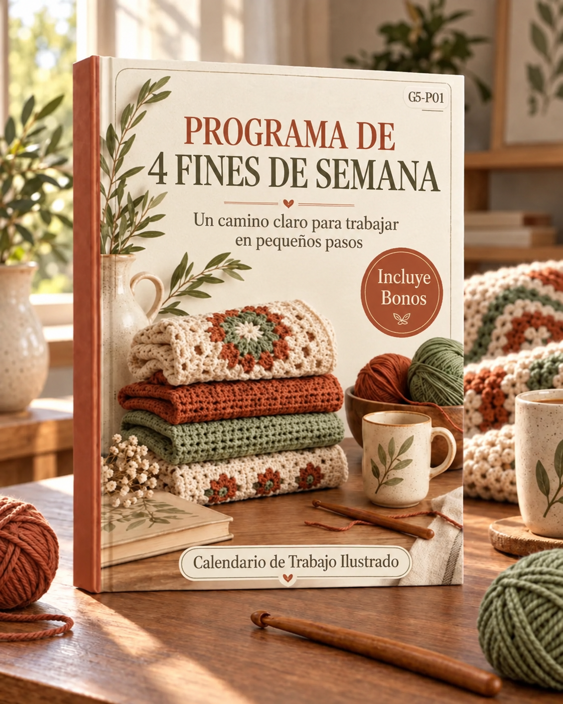

Cuatro fines de semana, cuatro proyectos terminados, un hogar hermosamente decorado
Este programa está diseñado con un solo objetivo: al final de cuatro fines de semana, tendrás cuatro piezas reales y terminadas de crochet exhibidas en tu hogar — no en un cajón, no “casi listas”, sino colocadas y luciéndose.
Cada fin de semana es un proyecto independiente. Están ordenados por dificultad y tamaño, para que tus habilidades se desarrollen naturalmente:
| Fin de Semana | Proyecto | Nivel | Tiempo Necesario | Dónde Va |
|---|---|---|---|---|
| 1 | Juego de posavasos (6 piezas) | Principiante | 4–5 horas | Mesa de centro / barra de cocina |
| 2 | Manteles individuales (2 piezas) | Principiante | 5–6 horas | Mesa de comedor o cocina |
| 3 | Funda de cojín (1 pieza) | Intermedio | 5–6 horas | Sofá de la sala |
| 4 | Cobija (1 pieza) | Intermedio | 6–8 horas | Sofá o cama |
Compromiso total de tiempo: aproximadamente 20–25 horas en cuatro fines de semana (4–6 horas por fin de semana). Puedes dividir cada fin de semana entre sábado y domingo, o hacerlo todo en un solo día enfocado.
Después de cuatro fines de semana, tendrás:
Son 10 artículos hechos a mano en cuatro fines de semana — suficientes para transformar visiblemente tu espacio.
Compra todo de una vez para que nunca estés esperando materiales a mitad de un fin de semana.
| Material | Cantidad | Para Cuál(es) Fin(es) de Semana | Costo Aprox. |
|---|---|---|---|
| Estambre de algodón grosor worsted — Color A (principal) | 5 madejas (100g c/u) | Fines de semana 1, 2 | $20–25 |
| Estambre de algodón grosor worsted — Color B (acento) | 1 madeja (100g) | Fines de semana 1, 2 | $4–5 |
| Estambre mezcla acrílico/algodón grosor worsted — Color C (principal) | 4 madejas (100g c/u) | Fin de semana 3 | $16–20 |
| Estambre grueso acrílico o mezcla de lana — Color D (principal) | 6 madejas (100g c/u) | Fin de semana 4 | $30–36 |
| Gancho de crochet — 5.0mm | 1 | Fines de semana 1, 2, 3 | $3–5 |
| Gancho de crochet — 6.5mm | 1 | Fin de semana 4 | $3–5 |
| Aguja lanera (roma, ojo grande) | 2 | Todos los fines de semana | $2–3 |
| Marcadores de puntos | 10 | Todos los fines de semana | $3–4 |
| Cinta métrica | 1 | Todos los fines de semana | $1–2 |
| Tijeras | 1 par | Todos los fines de semana | Ya las tienes |
| Relleno de cojín 45×45cm | 1 | Fin de semana 3 | $8–12 |
| Tapete de bloqueo + alfileres (opcional) | 1 juego | Fines de semana 1, 4 | $10–15 |
Costo total estimado: $100–132 para los cuatro fines de semana. Elige una familia de colores coordinada (ej., verde salvia + crema, azul polvoso + blanco, terracota + natural) para que todas las piezas se vean cohesivas en tu hogar.
Dificultad: Principiante | Tiempo: 4–5 horas | Hace: 6 posavasos redondos (10cm de diámetro)
Muestra de práctica, completar 3–4 posavasos
Terminar juego de 6, bloquear y estilizar
Los posavasos son el primer proyecto perfecto. Son pequeños (terminas uno en 30–40 minutos), solo usan puntos básicos, y la satisfacción de completar un artículo tangible rápidamente genera impulso para los fines de semana siguientes. Si cometes un error, solo perdiste 20 minutos — no 20 horas.
Antes de lanzarte, haz una muestra rápida de práctica. Haz 15 cadenas, trabaja 5 hileras de punto bajo. Revisa tu tensión: si el tejido se siente rígido y es difícil pasar el gancho, afloja. Si se siente flojo con espacios visibles entre puntos, aprieta. Tu muestra de tensión para estos posavasos debe ser aproximadamente 4 sc = 2cm. Ajusta el tamaño de gancho hacia arriba o abajo si es necesario.
Tamaño terminado: aproximadamente 10cm (4″) de diámetro.
Muestra de tensión: Vueltas 1–2 = 4cm de diámetro con gancho de 5.0mm y algodón worsted.
Abreviaturas: ch = cadena, sl st = punto deslizado, sc = punto bajo, inc = 2 sc en el mismo punto.
Vuelta 1: Hacer un anillo mágico. Ch 1 (no cuenta como punto), trabajar 6 sc dentro del anillo. Sl st en el primer sc para unir. Jalar la cola para cerrar bien. (6 pts)
Vuelta 2: Ch 1, inc en cada punto alrededor. Sl st para unir. (12 pts)
Vuelta 3: Ch 1, *sc 1, inc* — repetir alrededor. Sl st para unir. (18 pts)
Vuelta 4: Ch 1, *sc 2, inc* — repetir alrededor. Sl st para unir. (24 pts)
Vuelta 5: Ch 1, *sc 3, inc* — repetir alrededor. Sl st para unir. (30 pts)
Vuelta 6: Ch 1, *sc 4, inc* — repetir alrededor. Sl st para unir. (36 pts)
Vuelta 7 (borde): Cambiar a Color B si lo deseas. Ch 1, sc en cada punto alrededor. Sl st para unir. Rematar. (36 pts)
Esconder todas las hebras con tu aguja lanera. Pasa al menos 3cm en una dirección, luego regresa y pasa 3cm de vuelta para un acabado seguro.
Ahora que tienes tu primer posavasos listo, el patrón está memorizado. Tu segundo posavasos tomará la mitad del tiempo. Intenta completar 3–4 posavasos para el final del sábado. Toma descansos de 5 minutos entre posavasos para estirar las manos.
Completa los posavasos restantes hasta llegar a 6. Luego bloquea todos juntos:
Dificultad: Principiante | Tiempo: 5–6 horas | Hace: 2 manteles individuales rectangulares (33×48cm)
Comenzar y completar el primer mantel individual
Completar el segundo mantel individual, bloquear ambos
Ya sabes punto bajo y trabajar en vueltas. Este fin de semana trabajas en hileras (ida y vuelta) y aprendes el punto waffle, que crea una hermosa cuadrícula texturizada que es tanto decorativa como altamente funcional — la textura en relieve sujeta los platos y evita que se deslicen.
Tamaño terminado: aproximadamente 33×48cm (13×19″).
Muestra de tensión: 14 puntos × 8 hileras = 10cm en punto waffle con gancho de 5.0mm y algodón worsted.
Abreviaturas adicionales: dc = punto alto, fpdc = punto alto en relieve por el frente, bpdc = punto alto en relieve por detrás.
Ch 68. (Esto te da un ancho de aproximadamente 48cm. Ajusta en múltiplos de 3 + 2 si es necesario.)
Hilera 1 (preparación): Dc en la 4ta cadena desde el gancho (las 3 cadenas saltadas cuentan como 1 dc), dc en cada cadena a lo largo. Girar. (66 dc)
Hilera 2: Ch 3 (cuenta como dc), *fpdc alrededor del sig. pt, fpdc alrededor del sig. pt, bpdc alrededor del sig. pt* — repetir a lo largo, terminando con dc en la parte superior de la cadena de giro. Girar.
Hilera 3: Ch 3 (cuenta como dc), *bpdc alrededor del sig. pt, bpdc alrededor del sig. pt, fpdc alrededor del sig. pt* — repetir a lo largo, terminando con dc en la parte superior de la cadena de giro. Girar.
Repetir Hileras 2–3 hasta que el mantel mida 33cm (aproximadamente 26 hileras en total). Terminar después de una Hilera 3.
No girar. Trabajar 1 vuelta de sc uniformemente alrededor de todo el rectángulo: sc en cada punto a lo largo de la parte superior, 3 sc en la esquina, sc uniformemente por el costado (aproximadamente 2 sc por extremo de hilera), 3 sc en la esquina, sc a lo largo de la parte inferior (1 por cadena de base), 3 sc en la esquina, sc por el otro costado, 3 sc en la última esquina. Sl st para unir. Rematar.
Esconder todas las hebras.
El punto waffle tiene un ritmo: después de 4–5 hileras, dejarás de mirar el patrón y empezarás a sentir los postes en relieve bajo tu gancho. El primer mantel toma aproximadamente 2.5–3 horas. Toma un descanso a la mitad para estirar las muñecas.
Tu segundo mantel irá más rápido — el punto ya es memoria muscular. Después de terminar, bloquea ambos:
Dificultad: Intermedio | Tiempo: 5–6 horas | Hace: 1 funda de cojín (45×45cm, para relleno estándar)
Tejer el panel frontal
Tejer el panel trasero, coser, insertar relleno
Este fin de semana introduce dos habilidades nuevas: trabajar un panel plano más grande con tensión consistente, y coser dos paneles juntos. El punto semilla (también llamado limón o punto musgo) crea un tejido denso, acolchado y con una textura sutil que se ve mucho más sofisticada de lo que es para hacer.
Tamaño terminado: cada panel aproximadamente 45×45cm. La funda debe ser 1–2cm más pequeña que el relleno para un look relleno y profesional.
Muestra de tensión: 15 pts × 14 hileras = 10cm en punto semilla con gancho de 5.0mm.
Punto usado: Punto semilla = alternar sc y dc en la misma hilera, desfasando en la siguiente hilera.
Base: Ch 68 (debe medir aproximadamente 45cm; ajusta si tu tensión difiere — usa un número par de cadenas).
Hilera 1: Sc en la 2da cadena desde el gancho, *dc en la sig. cadena, sc en la sig. cadena* — repetir a lo largo, terminando con dc en la última cadena. Girar. (67 pts)
Hilera 2: Ch 1, sc en el primer pt (el dc), *dc en el sig. pt (el sc), sc en el sig. pt (el dc)* — repetir a lo largo. Girar. (67 pts)
Repetir Hilera 2 hasta que el panel mida 45cm (aproximadamente 63 hileras). La clave del punto semilla: siempre trabaja sc sobre un dc, y dc sobre un sc. Los puntos se desfasan naturalmente.
Rematar. Esconder las hebras.
Hacer un panel idéntico. Misma cadena de base, mismo punto, mismas medidas.
Alternativa (funda removible): En lugar de coser el cuarto lado cerrado, haz 3–4 presillas simples de botones a lo largo de un borde y coloca botones del mismo tono en el otro. Esto te permite sacar el relleno para lavar.
Dificultad: Intermedio | Tiempo: 6–8 horas | Hace: 1 cobija de regazo (100×130cm)
Base + construir hileras (meta: 60–70cm)
Continuar al largo completo, agregar borde + flecos, bloquear
Este es el proyecto que hará que la gente diga “¿tú hiciste eso?” Una cobija drapeada sobre un sofá cambia todo el carácter de una habitación. Usamos el punto musgo (también llamado punto granito o punto lino), que crea un tejido con apariencia de tela tejida, denso como para ser cálido pero lo suficientemente ligero para caer bien. Estambre grueso en un gancho de 6.5mm significa que las hileras crecen rápido.
Tamaño terminado: aproximadamente 100×130cm (39×51″) antes del borde.
Muestra de tensión: 12 pts × 14 hileras = 10cm en punto musgo con gancho de 6.5mm y estambre grueso.
Punto usado: Punto musgo = ch-1, sc, saltar 1 — crea un tejido con apariencia de tela.
Ch 122 (debe medir aproximadamente 100cm; ajusta usando un número par de cadenas + 2).
Hilera 1: Sc en la 4ta cadena desde el gancho (las cadenas saltadas cuentan como ch-1 + saltar-1), *ch 1, saltar 1 cadena, sc en la sig. cadena* — repetir a lo largo. Girar. (60 sc + 60 espacios de ch-1)
Hilera 2: Ch 2, saltar el primer sc, *sc en el sig. espacio de ch-1, ch 1, saltar el sig. sc* — repetir a lo largo, terminando con sc en el espacio de la cadena de giro. Girar.
Repetir Hilera 2 hasta que la cobija mida 130cm (aproximadamente 182 hileras). El ritmo es simple: sc en cada espacio de ch-1, ch 1 sobre cada sc. El patrón se desfasa solo automáticamente.
Rematar. No escondas las hebras todavía.
Vuelta 1: Unir estambre en cualquier esquina. Ch 1, sc uniformemente alrededor de toda la cobija: sc en cada punto a lo largo de la parte superior, 3 sc en la esquina, sc por el costado (aproximadamente 1 sc por extremo de hilera — prueba unos centímetros y cuenta para mantener parejo), 3 sc en la esquina, sc a lo largo de la parte inferior, 3 sc en la esquina, sc por el otro costado, 3 sc en la última esquina. Sl st para unir.
Vuelta 2: Ch 1, sc en cada pt alrededor, trabajando 3 sc en cada punto de esquina. Sl st para unir. Rematar.
El borde doble le da a la cobija un acabado limpio y terminado y evita que se enrolle.
Para un look boho o rústico, agrega flecos en los dos extremos cortos:
El punto musgo es meditativo una vez que encuentras tu ritmo. Con estambre grueso y un gancho de 6.5mm, cada hilera toma aproximadamente 2–3 minutos. Apunta a 90–100 hileras el sábado (aproximadamente 60–70cm). Coloca un marcador de puntos cada 20 hileras para seguir tu progreso sin contar. Toma un descanso de 10 minutos cada 45 minutos — tus muñecas te lo agradecerán.
Completa las hileras restantes hasta 130cm. Agrega el borde, luego los flecos si los elegiste. Después bloquea:
Tus habilidades son reales ahora — aquí está a dónde llevarlas
Terminaste cuatro proyectos, aprendiste media docena de puntos y desarrollaste la memoria muscular que hace que el crochet se sienta natural. La pregunta ahora no es “¿puedo hacer esto?” sino “¿qué quiero hacer después?”
Aquí está lo que aprendiste a lo largo de los cuatro fines de semana y lo que cada habilidad te permite hacer:
| Habilidad Aprendida | Fin de Semana | Qué Te Permite Hacer |
|---|---|---|
| Trabajar en vueltas (anillo mágico, aumentos en sc) | 1 | Canastas, bowls, tapetes redondos, amigurumi |
| Trabajar en hileras (girar, bordes consistentes) | 2 | Bufandas, caminos de mesa, mantas rectangulares |
| Puntos en relieve (fpdc, bpdc, punto waffle) | 2 | Trenzas, acanalado, prendas texturizadas |
| Patrones de puntos alternados (punto semilla) | 3 | Patrones de textura complejos, preparación para trabajo con color |
| Costura y armado | 3 | Prendas, bolsas, mantas de múltiples paneles |
| Proyectos de gran escala (tensión en muchas hileras) | 4 | Mantas tamaño completo, cobertores, cortinas |
| Bordes y acabados | 4 | Bordes pulidos y profesionales en cualquier proyecto |
| Bloqueo | 1, 4 | Trabajo calado, prendas que necesitan ajuste preciso |
De la colección principal Crochet para tu Hogar, estos proyectos se construyen directamente sobre lo que ya sabes:
Construye sobre: Fin de Semana 1 (vueltas), Fin de Semana 4 (trabajar con estambre más grueso)
Habilidad nueva: Trabajar en espiral continua (sin unir), endurecer con almidón o entretela.
Tiempo: Un fin de semana
Construye sobre: Fin de Semana 2 (hileras, puntos en relieve)
Habilidad nueva: Patrones de repetición más largos, borlas opcionales en ambos extremos.
Tiempo: Un fin de semana
Construye sobre: Fin de Semana 4 (todo)
Habilidad nueva: Trabajar con múltiples colores, manejar un proyecto pesado durante 2–3 fines de semana.
Tiempo: 2–3 fines de semana
Construye sobre: Fin de Semana 3 (punto semilla, costura)
Habilidad nueva: Hacer un juego cohesivo con ligeras variaciones (diferentes texturas, mismos colores).
Tiempo: Un fin de semana para 2 fundas más
Completaste el Programa de 4 Fines de Semana. Tienes cuatro piezas artesanales que no existían hace un mes, y cada una de ellas está en tu hogar, siendo usada, siendo admirada.
Elige tu próximo proyecto de la colección principal, agenda una fecha, y sigue construyendo.
Los patrones, las habilidades y la confianza son tuyos ahora. Úsalos.